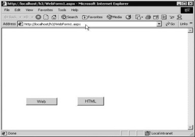

7. C# and ASP.Net
In this chapter, we shall
explore the Web, beginning with the very first principles. So, make a new
sub-directory called aaa in c:\inetpub\wwwroot, and then, create a file named
a.aspx with the following contents:
a.aspx
Hi
Bye
In Internet Explorer, enter the
following url: http://localhost/aaa/a.aspx.
After a slight time lag, the text "hi bye" gets displayed in the
browser window. This really is no big deal! Then, you need to add one more line
to the file a.aspx.
a.aspx
Hi
Bye
<% hi %>
Either re-load IE and enter the
URL, or simply click on the Refresh button in the browser. This will result in
the display of an error message, as shown in screen 7.1.
|
Screen 7.1 |
The same "hi" when
placed within the tags <% and %>, generates the error. This substantiates
the fact that, anything enclosed within the % tags, is treated in a special
manner. Now, click on the link 'Show Detailed Compiler Output'. This will
display the name of the program, i.e. vbc.exe, as is evident in the screen 7.2.
The name vbc symbolizes the Visual Basic Compiler.
|
Screen 7.2 |
This proves that the code written
in an aspx file, gets converted into code of a programming language, such as
Visual Basic. Since, in this book, we have taken an oath to work only with the
C# programming language, we add the following line in the file a.aspx, and
click on the Refresh button yet again.
a.aspx
<%@ Language=C# %>
hi
bye
<% hi %>
We obtain the same error as
before. But, when we click on the link 'Show Detailed Compiler Output', the
following claptrap is hurled at us:
Output
C:\WINNT\system32> " c:\winnt\microsoft.net\framework\v1.0.2914\csc.exe" /t:library /utf8output /R:"c:\winnt\microsoft.net\framework\v1.0.2914\mscorlib.dll" /R:"c:\winnt\assembly\gac\system.web.services\1.0.2411.0__b03f5f7f11d50a3a\system.web.services.dll" /R:"c:\winnt\assembly\gac\system.data\1.0.2411.0__b77a5c561934e089\system.data.dll" /R:"c:\winnt\assembly\gac\system.drawing\1.0.2411.0__b03f5f7f11d50a3a\system.drawing.dll" /R:"c:\winnt\assembly\gac\system.xml\1.0.2411.0__b77a5c561934e089\system.xml.dll" /R:"c:\winnt\assembly\gac\system\1.0.2411.0__b77a5c561934e089\system.dll" /R:"c:\winnt\assembly\gac\system.web\1.0.2411.0__b03f5f7f11d50a3a\system.web.dll" /out:"C:\WINNT\Microsoft.NET\Framework\v1.0.2914\Temporary ASP.NET Files\root\fa7064c6\2014c0f1\xkut9bsl.dll " /debug- /optimize+ "C:\WINNT\Microsoft.NET\Framework\v1.0.2914\Temporary ASP.NET Files\root\fa7064c6\2014c0f1\xkut9bsl.0.cs"
Observe the use of csc.exe as
the compiler for C# program. Let us comprehend the above output, by first
creating a sub-directory named pqr1 in the root, and then, by penning-down a
small program named b.cs.
b.cs
public class yyy
{
public void abc()
{
System.Console.WriteLine("yyy abc");
}
}
The class yyy has a function
called abc. The WriteLine function merely prints yyy abc on the screen. Although
there is hardly any content in the class, we would still implore other
developers to use it. The only answer is to generate a dll, or a dynamic link
library from it. A dll is similar to an exe file, except for the fact that, a
dll cannot be executed. Under Windows, all the code that is to be shared, is
stored in a dll. It is simply a storehouse of functions.
Run the compiler as follows:
csc /t:library b.cs
The /t switch which by default
creates an executable, along with library asks the compiler to create a dll.
The 'dir' command, when used in the directory pqr1, will illustrate a file
named b.dll. Now, create a file named a.cs, which will access the code of the
class yyy.
a.cs
class zzz {
public static void Main()
{
yyy a;
}
}
On running the compiler as 'csc
a.cs', the following error will be displayed:
a.cs(5,1): error CS0246: The type or namespace name 'yyy' could not be found (are you missing a using directive or an assembly reference?)
The error exposes the ignorance
on the part of C#, with respect to the class yyy. Now, call the compiler with
the switch /r, as follows:
csc /r:b.dll a.cs
The /r or reference option
provides a clue to the compiler, to look in the dll file named b.dll, for the code
of the classes that it cannot appreciate. By default, the compiler attends to a
large number of dlls, such as, mscorlib.dll for the System namespace or
System.Data.Dll; for the data bases namespace, etc.
Now lets go back to a.aspx and
understand the program as well as the output seen in the browser. Any line
beginning with the <%@ symbol, is termed as a 'directive'. A 'directive' is
akin to an order or an instruction. The 'Page' directive applies to a page or
the Web Form. By using the 'language' attribute, we are asking the framework to
use the C# compiler for compiling the C# code, generated by the system. Visual
Basic is the default language to be chosen.
The output clearly divulges the
fact that, the csc program is being run from the directory c:\winnt\microsoft.net\framework\v1.0.2914.
The /t option results in the creation of a dll file, rather than an exe file.
The 'utfoutput' option emits compiler messages, using the UTF encoding, which
represents an English-like coding. The /R option merely provides a reference to
the other dll's, for the C# compiler to attend to. Most of the dlls have been
stipulated, even though they have already been checked by default. The /out
option assigns the name of xkut9bsl.dll to the dll. The 'debug' option is turned-off.
It has a minus sign. Thus, no debugging information crosses over into the dll.
The 'optimize' option has a plus sign, which enables the compiler to generate
optimized code, i.e. code that executes swiftly. The last parameter is the name
of the C# program. Move into the specified folder, and check the files that get
generated.
Now, click on the last link,
Show Complete Compilation Source:. This displays the complete C# program
generated by the compiler. The code is as follows:
Line 1://------------------------------------------------------------------------------
Line 2:// <autogenerated>
Line 3:// This code was generated by a tool.
Line 4:// Runtime Version: 1.0.2914.16
Line 5://
Line 6:// Changes to this file may cause incorrect behavior and will be lost if
Line 7:// the code is regenerated.
Line 8:// </autogenerated>
Line 9://------------------------------------------------------------------------------
Line 10:
Line 11: namespace ASP {
Line 12: using System;
Line 13: using System.Collections;
Line 14: using System.Collections.Specialized;
Line 15: using System.Configuration;
Line 16: using System.Text;
Line 17: using System.Text.RegularExpressions;
Line 18: using System.Web;
Line 19: using System.Web.Caching;
Line 20: using System.Web.SessionState;
Line 21: using System.Web.Security;
Line 22: using System.Web.UI;
Line 23: using System.Web.UI.WebControls;
Line 24: using System.Web.UI.HtmlControls;
Line 25:
Line 26:
Line 27: public class a_aspx : System.Web.UI.Page, System.Web.SessionState.IRequiresSessionState {
Line 28:
Line 29: private static System.Web.UI.AutomaticHandlerMethodInfos __autoHandlers;
Line 30:
Line 31: private static bool __intialized = false;
Line 32:
Line 33: private static System.Collections.ArrayList __fileDependencies;
Line 34:
Line 35: public a_aspx() {
Line 36: System.Collections.ArrayList dependencies;
Line 37: if ((ASP.a_aspx.__intialized == false)) {
Line 38: dependencies = new System.Collections.ArrayList();
Line 39: dependencies.Add("c:\\inetpub\\wwwroot\\aaa\\a.aspx");
Line 40: ASP.a_aspx.__fileDependencies = dependencies;
Line 41: ASP.a_aspx.__intialized = true;
Line 42: }
Line 43: }
Line 44:
Line 45: protected override System.Web.UI.AutomaticHandlerMethodInfos AutoHandlers {
Line 46: get {
Line 47: return ASP.a_aspx.__autoHandlers;
Line 48: }
Line 49: set {
Line 50: ASP.a_aspx.__autoHandlers = value;
Line 51: }
Line 52: }
Line 53:
Line 54: protected System.Web.HttpApplication ApplicationInstance {
Line 55: get {
Line 56: return ((System.Web.HttpApplication)(this.Context.ApplicationInstance));
Line 57: }
Line 58: }
Line 59:
Line 60: public override string TemplateSourceDirectory {
Line 61: get {
Line 62: return "/aaa";
Line 63: }
Line 64: }
Line 65:
Line 66: public override void InstantiateIn (System.Web.UI.Control control) {
Line 67: this.__BuildControlTree (control);
Line 68: }
Line 69:
Line 70: private void __BuildControlTree(System.Web.UI.Control __ctrl) {
Line 71: __ctrl.SetRenderMethodDelegate (new System.Web.UI.RenderMethod (this.__Render__control1));
Line 72: }
Line 73:
Line 74: private void __Render__control1 (System.Web.UI.HtmlTextWriter __output, System.Web.UI.Control parameterContainer) {
Line 75: __output.Write("\r\nhi\r\nbye\r\n");
Line 76:
Line 77: #line 4 "c:\inetpub\wwwroot\aaa\a.aspx"
Line 78:
Line 79: hi
Line 80:
Line 81:
Line 82: #line default
Line 83: }
Line 84:
Line 85: protected override void FrameworkInitialize () {
Line 86: this.FileDependencies = ASP.a_aspx.__fileDependencies;
Line 87: }
Line 88:
Line 89: public override int GetTypeHashCode() {
Line 90: return 2141278421;
Line 91: }
Line 92: }
Line 93: }
Line 94:
Let us understand this machine
generated C# code, from the aspx file. The code becomes apparent only when an
error is detected. Otherwise, it is deleted. The comments can easily be
ignored, as they merely divulge the fact that a program has generated the code,
without any human intervention, which is self-evident. However, the program
name is not revealed. Then, there is a 'namespace' statement, with the
namespace of ASP, which integrates the entire code.
The program always starts with
the 'using' statements, and there are a total of 13 such statements. As a
result, the classes present within these namespaces, do not require to be
prefaced by the namespaces any longer. Microsoft expects you to utilize classes
from these namespaces more often, than from other namespaces.
Since the name of the aspx file
is 'a', the C# class is assigned the name a_aspx. This call is derived from
Page, which belongs to the System.Web.UI namespace. This class represents a
page, which is dispatched by the server to the browser. It also collects all
the controls that are visible on the page. The class has specially been devised
to handle aspx files, and it contains numerous members, which may be employed
to build dynamic content. The class a_aspx, also derives from the
IRequiresSessionState interface, which forms a part of System.Web.SessionState
namespace. This is because, the HTTP protocol does not 'maintain state',
whereas the interface does so, while working with sessions. This interface has
no members at all. Hence, it is called a 'marker'.
There are three instance variables.
All variables that are created by the system, are normally prefixed with two
underscores. This is done, in order to avoid any name clashes between the
system variables and the user defined variables. Therefore, follow the simple
rule: 'As a user, as long as you do not create a variable name that is prefixed
with two underscores, no grief awaits you.'
The first one is named as
__autoHandlers. Presently, we are not in a position to explain the working of
this instance variable, since there is no help associated with it. Microsoft,
which is famous for holding back crucial information, declines to disclose
these details, since it does not expect the user to touch upon, or use the
above class. Or, maybe as a remote possibility, the programmers at Microsoft
forgot to document it.
The second instance variable,
__initialized, has been set to False. One clarification is in order here. Since
the keyword attached to this class is 'static', it is not an instance variable.
The use of this variable will be illustrated to you, in a short while.
The third variable,
__fileDependencies, is of data type ArrayList, which stores a collection. An
ArrayList is often used to store multiple values. Use of arrays simplifies handling
of the multiple values, but retrieval of data can be slow, if the array is
large due to the absence of search facility.
As usual, the constructor gets
called first. There is a local variable named 'dependencies', of data type
ArrayList. The difference in the handling of of local and instance veriable is,
that the variable known as 'dependencies', will be discarded at the end of this
function, whereas, fileDependencies, being an instance variable, shall live
till the instance is alive.
Firstly, the value of variable
__initialized is checked. Since the value is False, the 'if' statement results
in True. Before the 'if' statement ends, the value of __initialized is reverted
back to True. As the variable is 'static' in nature, we have to use the name of
the class and the namespace, despite this being optional. Thus, the above 'if'
statement shall be executed only once. After having created an instance of the
ArrayList class, the Add function is called, to add a string to the ArrayList
object. This string contains the full path name of the aspx file. Only one Add
function is present, since we have only file to add.
Thereafter, the instance
variable __fileDependencies is initialized to a value of 'dependencies'.
Apparently, there is no real need of the 'dependencies' variable, since the Add
function could have been called from __fileDependencies. But, we have no
business wrangling over this issue with a computer generated program.
The read/write property called
AutoHandlers, exists in the Page class, since it contains the keyword
'override'. The term 'override' is used only when the member exists in the base
class. This does not necessarily refer to Page alone, but could also refer to
the classes that Page itself is derived from.
The standard routine is
executed, i.e. the instance variable __autoHandlers is initialized to the value
passed to this property, and this value is returned in the 'get' accessor. Yet
again, there is no help available here!
The 'read only' property
ApplicationInstance, of data type HttpApplication, does not belong to the Page
class. However, the Page class has a Context property of datatype HttpContext,
which embodies information about the current page request. The HttpContext
class in turn, has a member called ApplicationInstance, of data type
HttpApplication, which signifies the current Http Request. There is no need for
using the cast operator anywhere, since both the sides have an object, which
has directly or indirectly, been derived from HttpApplication. The read only property
TemplateSourceDirectory returns the virtual directory of the web server as it
contains the aspx files. We are shown the subdirectory of aaa in inetpub.
The function InstantiateIn, is
used to build a list of controls in a Control Tree. These controls have been
picked up from the aspx file. This function has been passed a parameter called
'control', of data type Control, which will eventually contain the Control
Tree. Then, the function __BuildControlTree is called with the parameter
'control'.
The Control class holds a
function called SetRenderMethodDelegate, which is passed the address of the
function __Render__control1. This function would have to be called, each time
the controls are to be rendered or drawn on a page. This function is assigned
with the help of the delegate RenderMethod so that the system handles this
activity.
The most important function is
__Render__control1. This function is passed two parameters. The first parameter
is __output, of type HtmlTextWriter, which knows how to write to the Web
Server, which in turn, sends the html file over. The second parameter
represents the Control.
The output function has a member
called Write, which writes to the Web Server. Thus, the entire content i.e. the
static html text, as well as, the aspx code in <%, is passed as a string to
this function. Effectively, the entire aspx file is placed within this
function. But, whatever is enclosed within <%, has to meet the
specifications of the syntax of C# or aspx.
The function FrameworkInitialize
is used to initialize the page. Also, the property FileDependencies of data
type ArrayList is initialized, so as to contain the list of file names, which
are needed by the HttpResponse object. Finally, the GetTypeHashCode function
returns a number, known as the Hash Code, for this page. The hash code is an
index that is stored in the lists, along with the object, in order to retrieve
data faster. Earlier there were 14 files created in the above folder, but once
the error vanished, the count escalated to 16.
The two recently introduced
files are _vssbxra.dll, which is 4k large, and an XML file. None of these files
mean much to us. However, what is finally revealed is that, the aspx file gets
converted into C# code by the C# compiler, which is then converted into a dll,
and placed in a folder. This dll is executed by the Web Server to generate an
html file, as is evident in the Form Designer, and then, it is finally
dispatched across the internet.
Create a fresh project, using
File - New - Project. As was done earlier, select C# Projects in the Projects
pane, and opt for ASP.Net application in the Template Pane. Change the name to
'h2', and click on OK. Ensure that the ToolBox and the Properties Windows are
on display. Then, incorporate a button from the Web Forms tab. On changing the
Text property to 'eeb', the label on the button will also get amended
according. Thereafter, double click on the button, to get transported to the
Code Painter. Note that the filename is WebForm1.aspx.cs. Within a function
called button1_Click, write the following line of code:
Response.Write("button1");
Then, click on the WebForm1.aspx
tab, to switch to Design Mode, and then, move on to the HTML tab in the ToolBox.
From the list of controls, choose a button and drop it into the Form. Change
the 'value' property of this control to HTML. Though the two buttons may look
very similar, they actually possess different properties. Now, double click on
the HTML button, to enable insertion of some code. On doing so, a message box
pops up, as shown in screen 7.3.
|
Screen 7.3 |
It lucidly reveals that the
control is an HTML control, and not a Web Control. Thus, no code can be entered
into this control, unless it is converted into a Server Control.
Click on OK and then save all the
files, by clicking on the menu option File - Save All. Move into the h2 folder,
to view the code that gets generated. There are a total of 12 files. To unravel
the behind-the-scene activities, we need to understand the code contained in
these 12 files. The first file that we take into consideration is
WebForm1.aspx.
WebForm1.aspx
<%@ Page language="c#" Codebehind="WebForm1.aspx.cs" AutoEventWireup="false" Inherits="h2.WebForm1" %>
<!DOCTYPE HTML PUBLIC "-//W3C//DTD HTML 4.0 Transitional//EN" >
<HTML>
<HEAD>
<meta name="GENERATOR" Content="Microsoft Visual Studio 7.0">
<meta name="CODE_LANGUAGE" Content="C#">
<meta name="vs_defaultClientScript" content="JavaScript (ECMAScript)">
<meta name="vs_targetSchema" content="http://schemas.microsoft.com/intellisense/ie5">
</HEAD>
<body MS_POSITIONING="GridLayout">
<form id="Form1" method="post" runat="server">
<asp:Button id="Button1" style="Z-INDEX: 101; LEFT: 74px; POSITION: absolute; TOP: 245px" runat="server" Text="Web" Width="96px" Height="26px"></asp:Button>
<INPUT style="Z-INDEX: 102; LEFT: 232px; WIDTH: 82px; POSITION: absolute; TOP: 242px; HEIGHT: 30px" type="button" value="HTML">
</form>
</body>
</HTML>
Now, create a new directory
named 'h3' in c:\inetpub\wwwroot. Copy the file WebForm1.aspx into this directory.
Open the file in the h3 subdirectory, and then, delete only the first directive
line. Once this is done, load IE and write the following URL:
http://localhost/h3/WebForm1.apsx
On doing so, two buttons will be
displayed on the screen, as can be seen in screen 7.4.
|
 |
|
Screen 7.4 |
Clicking on the buttons does not
yield any outcome at all. The two buttons get converted into two separate tags.
The Web Form button becomes a tag named asp:Button with an id of Button1 and
text of Web.
The HTML Button control takes
the form of a pure HTML tag input, with the type specified as Button, and with
the value as HTML. Now, return to folder h2, and ensure that no files are
housed in the bin folder. Then, in the browser, enter the URL as
http://localhost/h2/WebForm1.aspx. Screen 7.5 shows the output.
|
Screen 7.5 |
The error that is generated
comes as a bolt from the blue, since we had expected not any errors to occur,
other than in WebForm1.aspx. However, the error references the file
Global.asax. If this file is present in the folder, it gets displayed first.
The Web Server searches for a
class named h2.Global, which it is unable to locate. Run the C# compiler in the
h2 directory as follows:
Csc /t:library /out:c:\inetpub\wwwroot\h2\bin\Webform1.dll Global.asax.cs
The /out option creates a dll in
the bin sub-directory. Now, click on the Refresh button in IE. This will
generate another error, as shown in screen 7.6.
|
Screen 7.6 |
The error states that it is
unable to locate the class named h2.WebForm1. So once again, run the compiler
using the following command:
Csc /t:library /out:c:\inetpub\wwwroot\h2\bin\Webform1.dll Global.asax.cs WebForm1.aspx.cs
Now, refresh the screen, and you
will be relieved to see that no more errors are visible. Clicking on the first button,
shows screen 7.7 with the word 'button1' displayed on top of the window.
|
|
|
Screen 7.7 |

Let us understand as to what exactly
transpires behind the screen.
In order to raise the veil off
this mystery, open the file Global.asax in the h2 subdirectory.
Global.asax
<%@ Application Codebehind="Global.asax.cs" Inherits="h2.Global" %>
This file has a single line,
containing an aspx directive. The file is also known as the ASP.Net application
file, as it responds to application level events or session event handlers,
raised either by the ASP.NET or by the class HttpModules. Whilst creating the
dll, this file is accessed, if it exists in the root directory.
If you essay reading this file
across the internet by entering its name in the URL, the request will get
rejected. Thus, external users are not allowed to view its contents.
The Application directive merely
raises the stake, since it pertains to an entire application, unlike the page
directive, which is applicable to a single page only. The Inherits directive
specifies the parent class from which the derived classes should inherit. In
this case, Global is the name of the class, and h2 is the namespace. If this
class is not available, an error is generated. The CodeBehind attribute refers
to the file that contains the code, which in our case, is the file
Global.asax.cs. At run time, the code must be available in a dll, of any name,
located in the bin folder. It does not need to be named as WebForm1.dll. Now,
let us look at the next file, named Global.asax.cs.
Global.asax.cs
using System;
using System.Collections;
using System.ComponentModel;
using System.Web;
using System.Web.SessionState;
namespace h2
{
/// <summary>
/// Summary description for Global.
/// </summary>
public class Global : System.Web.HttpApplication
{
protected void Application_Start(Object sender, EventArgs e)
{
}
protected void Session_Start(Object sender, EventArgs e)
{
}
protected void Application_BeginRequest(Object sender, EventArgs e)
{
}
protected void Application_EndRequest(Object sender, EventArgs e)
{
}
protected void Session_End(Object sender, EventArgs e)
{
}
protected void Application_End(Object sender, EventArgs e)
{
}
}
}
The class Global belongs to the
h2 namespace, and contains exactly six functions. If we want our code to be called
during the start-up of the Application, then it should be placed in the
function Application_Start. In the same vein, code that is to be executed at
the start of a session, ought to be placed in the function Session_Start. The
difference between an Application and a Session is that, a Session starts with
the invocation of a browser and ends when the browser is shut down, whereas, an
Application object lives on till the end. Thus, you can write whatever code you
would like to call when any of the above events occur. This single error led us
onto another error, wherein the class h2.WebForm1 could not be located. This
class happens to be in the file WebForm1.aspx.cs.
WebForm1.aspx.cs
using System;
using System.Collections;
using System.ComponentModel;
using System.Data;
using System.Drawing;
using System.Web;
using System.Web.SessionState;
using System.Web.UI;
using System.Web.UI.WebControls;
using System.Web.UI.HtmlControls;
namespace h2
{
/// <summary>
/// Summary description for WebForm1.
/// </summary>
public class WebForm1 : System.Web.UI.Page
{
protected System.Web.UI.WebControls.Button Button1;
public WebForm1()
{
Page.Init += new System.EventHandler(Page_Init);
}
private void Page_Load(object sender, System.EventArgs e)
{
// Put user code to initialize the page here
}
private void Page_Init(object sender, EventArgs e)
{
//
// CODEGEN: This call is required by the ASP.NET Web Form Designer.
//
InitializeComponent();
}
#region Web Form Designer generated code
/// <summary>
/// Required method for Designer support - do not modify
/// the contents of this method with the code editor.
/// </summary>
private void InitializeComponent()
{
this.Button1.Click += new System.EventHandler(this.Button1_Click);
this.Load += new System.EventHandler(this.Page_Load);
}
#endregion
private void Button1_Click(object sender, System.EventArgs e)
{
Response.Write("button1");
}
}
}
The file starts with the usual
set of 'using' statements, along with their namespaces. This is followed by the
WebForm1 class, which is derived from the Page class. In the application, out
of the two buttons, only the Web Forms button becomes an instance variable
named Button1, whereas the HTML button does not get any reference at all. The
button created in the Application belongs to the Forms class, whereas this
Button originates from the WebControls class. They are as disparate as water is
from oil.
The constructor is always the first
to be called. It has the Page property, of data type Page, representing the
entire aspx file. This Page class has an event called Page_Init, which gets
called when the page is created. It is the first step in the lifecycle of a
page. At this stage, we are not allowed to view 'state information', as it
contains no values. Also, access to any other server control also is not
allowed.
The InitializeComponent is
called in the function Page_Init, wherein the Click event of the button is
assigned to the function Button1_Click. The Load event is triggered off,
whenever the page is to be sent across. Also, any code that is to be executed
for every page, should be placed in the function Page_Load. However, there are
very few restrictions that we need to abide by, when the page is to be sent
across. Both the .cs programs must be compiled, for successful generation of
the dll.
Clicking on the button leads to
a display of 'button1' in the browser window. This occurs only when the
function Button1_Click gets called. In this function, we use the Response
object, of data type HttpResponse, which contains a function called Write. This
function is aware as to how information is to be passed to the Web Server,
which in turn, sends it across to the Web Client.
|
Screen 7.8 |
The significant point to be
noted here is that, a Web Server can only send html files across. It is not capable
of achieving anything more. Thus, when we click the button, the web server is
aware of our intentions. Accordingly, it makes sure that the HTML page is
regenerated. It is the web server, which keeps track of the code that must be
executed while generating an html file. The web client is totally oblivious
about the activities being performed at the server's end. It is totally unaware
that the dll is responsible for generating the html code, and that the aspx
file gets converted into a C# program.
Thus, you should bear in mind
that, when running an application, Visual Studio.Net executes the following
chores:
1) It generates code for files such as Global.asax and Global.asax.cs.
2) It compiles the cs files into a dll, and places it in the bin folder.
3) It calls IE, and writes the URL in the IE window.
4) IE sends the URL to the Web Server.
5) The Web Server converts the aspx file into C# code.
6) The C# compiler converts the C# code into a dll, and places it in some unique folder.
7) This dll is executed, and as events occur, functions such as Page_Load get called.
8) Using properties like Response, or parameters like __output, the Web Server collects the HTML file, and sends it to the browser.
9) The browser can be either Netscape or IE, since only HTML is sent across.
Thus, a lot of activities take
place backstage. Now, let us consider the other files that get generated.
Add the following lines at the
end of the file Webform1.aspx.
WebForm1.aspx
<%
Hell
%>
Clicking on 'Show Detailed
Compiler Output' reveals that the /R option refers to WebForms1.dll :
/R:"c:\winnt\microsoft.net\framework\v1.0.2914\temporary asp.net files\h2\c5ac8aa9\81619964\assembly\downloaded2\595519b8\00c86a68_c801c101\webform1.dll"
Clicking on 'Complete
Compilation Source' reveals some modifications in the C# code. We shall expose
you to only those specific changes.
Line 11: namespace ASP {
Line 25: using ASP;
Line 26: using h2;
Line 29:[System.Runtime.CompilerServices. CompilerGlobalScopeAttribute()]
Line 30: public class WebForm1_aspx : h2.WebForm1, System.Web.SessionState.IRequiresSessionState {
Line 31:
Line 32:
Line 33: #line 11 "c:\inetpub\wwwroot\h2\WebForm1.aspx"
Line 34: protected System.Web.UI.HtmlControls.HtmlForm Form1;
Line 35:
Line 36: #line default
Line 37:
Line 40: private static object __stringResource;
Line 41:
Line 43:
Line 44: public WebForm1_aspx() {
Line 45: System.Collections.ArrayList dependencies;
Line 46: if ((ASP.WebForm1_aspx.__intialized == false)) {
Line 47: ASP.WebForm1_aspx.__stringResource = System.Web.UI.TemplateControl.ReadStringResource(typeof(ASP.WebForm1_aspx));
Line 52: }
Line 53: this.Server.ScriptTimeout = 30000000;
Line 54: }
Line 55:
Line 56: protected override bool SupportAutoEvents {
Line 57: get {
Line 58: return false;
Line 59: }
Line 60: }
Line 61:
Line 78: private System.Web.UI.Control __BuildControlButton1() {
Line 79: System.Web.UI.WebControls.Button __ctrl;
Line 80:
Line 81: #line 12 "c:\inetpub\wwwroot\h2\WebForm1.aspx"
Line 82: __ctrl = new System.Web.UI.WebControls.Button();
Line 83:
Line 84: #line default
Line 85: this.Button1 = __ctrl;
Line 86:
Line 87: #line 12 "c:\inetpub\wwwroot\h2\WebForm1.aspx"
Line 88: __ctrl.ID = "Button1";
Line 89:
Line 90: #line default
Line 91:
Line 92: #line 12 "c:\inetpub\wwwroot\h2\WebForm1.aspx"
Line 93:
((System.Web.UI.IAttributeAccessor)(__ctrl)).SetAttribute("style", "Z-INDEX: 101; LEFT: 89px; POSITION: absolute; TOP: 93px");
Line 94:
Line 95: #line default
Line 96:
Line 97: #line 12 "c:\inetpub\wwwroot\h2\WebForm1.aspx"
Line 98: __ctrl.Text = "web";
Line 99:
Line 100:#line default
Line 101:return __ctrl;
Line 102:}
Line 103:
Line 104:private System.Web.UI.Control __BuildControlForm1() {
Line 105:System.Web.UI.HtmlControls.HtmlForm __ctrl;
Line 106:
Line 107:#line 11 "c:\inetpub\wwwroot\h2\WebForm1.aspx"
Line 108:__ctrl = new System.Web.UI.HtmlControls.HtmlForm();
Line 109:
Line 110:#line default
Line 111:this.Form1 = __ctrl;
Line 112:
Line 113:#line 11 "c:\inetpub\wwwroot\h2\WebForm1.aspx"
Line 114:__ctrl.ID = "Form1";
Line 115:
Line 116:#line default
Line 117:
Line 118:#line 11 "c:\inetpub\wwwroot\h2\WebForm1.aspx"
Line 119:__ctrl.Method = "post";
Line 120:
Line 121:#line default
Line 122:System.Web.UI.IParserAccessor __parser = ((System.Web.UI.IParserAccessor)(__ctrl));
Line 123:
Line 124:#line 11 "c:\inetpub\wwwroot\h2\WebForm1.aspx"
Line 125:__parser.AddParsedSubObject(new System.Web.UI.LiteralControl("\r\n\t\t\t"));
Line 126:
Line 127:#line default
Line 128:
Line 129:#line 11 "c:\inetpub\wwwroot\h2\WebForm1.aspx"
Line 130:this.__BuildControlButton1();
Line 131:
Line 132:#line default
Line 133:
Line 134:#line 11 "c:\inetpub\wwwroot\h2\WebForm1.aspx"
Line 135:__parser.AddParsedSubObject(this.Button1);
Line 136:
Line 137:#line default
Line 138:
Line 139:#line 11 "c:\inetpub\wwwroot\h2\WebForm1.aspx"
Line 140:__parser.AddParsedSubObject(new System.Web.UI.LiteralControl ("\r\n\t\t\t<INPUT style=\"Z-INDEX: 102; LEFT: 216px; POSITION: absolute; TOP: 165px\" typ" +
Line 141: "e=\"button\" value=\"html\">\r\n\t\t"));
Line 142:
Line 143:#line default
Line 144:return __ctrl;
Line 145:}
Line 146:
Line 147:private void __BuildControlTree (System.Web.UI.Control __ctrl) {
Line 148:
Line 149:#line 1 "c:\inetpub\wwwroot\h2\WebForm1.aspx"
Line 150:this.__BuildControlForm1 ();
Line 151:
Line 152:#line default
Line 153:System.Web.UI.IParserAccessor __parser = ((System.Web.UI.IParserAccessor)(__ctrl));
Line 154:
Line 155:#line 1 "c:\inetpub\wwwroot\h2\WebForm1.aspx"
Line 156:__parser.AddParsedSubObject(this.Form1);
Line 157:
Line 158:#line default
Line 159:__ctrl.SetRenderMethodDelegate(new System.Web.UI.RenderMethod(this.__Render__control1));
Line 160:}
Line 161:
Line 162:private void __Render__control1(System.Web.UI.HtmlTextWriter __output, System.Web.UI.Control parameterContainer) {
Line 163:this.WriteUTF8ResourceString (__output, 0, 405, true);
Line 164:
Line 165: #line 11 "c:\inetpub\wwwroot\h2\WebForm1.aspx"
Line 166:parameterContainer.Controls[0]. RenderControl (__output);
Line 167:
Line 168:#line default
Line 169:__output.Write("\r\n\t</body>\r\n</HTML>\r\n");
Line 170:
Line 171:#line 17 "c:\inetpub\wwwroot\h2\WebForm1.aspx"
Line 172:
Line 173: hell;
Line 174:
Line 175:
Line 176:#line default
Line 177:}
Line 178:
Line 179:protected override void FrameworkInitialize() {
Line 180:SetStringResourcePointer(ASP.WebForm1_aspx.__stringResource, 405);
Line 181:this.FileDependencies = ASP.WebForm1_aspx.__fileDependencies;
Line 182:}
Line 183:
Line 184: public override int GetTypeHashCode() {
Line 185:return -530771324;
Line 186:}
Line 187: }
Line 188: }
Line 189:
Two more 'using' statements with
ASP and h2 have been appended This is because the files Global.asax and
Webform1.aspx.cs contain code within the namespace h2. An attribute of
CompilerGlobalScopeAttribute has been added to the WebForm1_aspx class to render
it a global scope. The class is used mainly to communicate with debugging
tools. Hence, it should be implemented only when a program that behaves like a
compiler is being built.
The class originates from the
namespace System.Runtime.CompilerServices. Line 30 shows that the class
WebForm1_aspx is derived from WebForm1, in the h2 namespace. This explains the
functioning of the 'inherits' directive. The class h2, in turn, is derived from
the class Page. The directive #line accepts two parameters, viz. the current
line number and the name of the file. Due to this, on the occurrence of an
error, Line 33 is renumbered as Line 11.
The name of the source file is
also included while displaying error messages or warnings. This directive is to
be used only when the default values chosen by the compiler, are to be
overridden. The default value for the name of the file is the source file. The
directive #line with the word 'default' resets the line number to the original.
Henceforth, we shall ignore all
the #line directives, as they are only an aid to the compiler, in displaying
the line where an error takes place. On line 34, there is an instance variable
named Form1, which is of data type HtmlForm. This variable acts as a container
for all the Server Controls on a web page. All server controls that post back
data to the server, must be placed between the open and closed tags of a
HtmlForm object. This variable also provides a programmer access to the HTML
tag on the server. On line 40, there exists an instance variable named
__stringResource, of type object. The class object is the mother of all
classes. Therefore, all classes are derived from it. It has very basic
functionality. In cases where the data type is unknown, the use of a class
object puts the issue to rest.
In the constructor, additional
code has been provided. The keyword 'typeof' returns a string containing the
type of the expression. It can return only one of the following values: string,
boolean, object, function, and undefined. Lest we forget, the name of our
class, WebForm1_aspx also qualifies as an object. Help for the function
ReadStringResource does not exist. So, we shall sidestep it, for the time
being.
The Page class has a property
named Server, of data type HttpServerUtility . The datatype, in turn, has a
property named ScriptTimeout, which allows the server to determine the duration
in seconds, subsequent to which, the script times out, because the server does
not have too much time to spend in executing an aspx file. However, the number
used is too large, therefore defeating the purpose of this function.
The value assigned to property
SupportAutoEvents determines whether Auto Events are supported or not. The
value of False evidently indicates that Auto Events are not supported. The
function __BuildControlButton1 performs an assortment of tasks. First of all, a
local variable __ctrl of type Button is created, and then, initialized to a new
instance. Thereafter, the instance variable Button1 is equated to the local
variable __ctrl. We have already stated the futility of arguing with a computer
program that generates such code. The Button control has a large number of
attributes, which are set using the SetAttribute function. The Text property is
also amended to 'Web', in order to alter the label of the button.
In the function
__BuildControlForm1, a similar local variable called __ctrl is created, and
initialized to a new instance. The Form1 property is then initialized to this
HtmlForm object. The id or name is shown as the string Form1. A local variable
named __parser, of data type IParserAccessor, is then created. Any name that
begins with the capital letter I, is an 'interface'. Hence, IParserAccessor is
an interface, which allows access to the parser, for a control. Only two
classes implement this interface, viz. Control and ListItem. As __ctrl is
derived from HtmlForm, it is indirectly derived from IParserAccessor. For those
of you who have a penchant for statistics, it would be interesting to know that
this interface has only one function named AddParsedSubObject.
An instance of LiteralControl is
passed to this function, so that it can be added to the HtmlForm object, or to
the parent object. This LiteralControl, in this case, is the Html button. This
control represents all Html widgets such as textboxes, buttons et al., for
which the server does not have to spend processing time. The server stores the
value of the Text property, in order to 'maintain state'.
A control that does not require
a 'runat' server attribute, gets converted to a LiteralControl. The constructor
is provided the entire HTML text, which represents the control. The function
__BuildControlTree calls __BuildControlForm1. Once again, the parser in the
local variable __parser, is accessed from the __ctrl parameter that is passed.
The Form1 object is then added as a child, to the Control class object __ctrl.
Using the function
__Render__control1, the page is rendered. In the render function, the function
WriteUTF8ResourceString is used. The RenderControl requires an HtmlTextWriter
object, as a parameter. Thus, the contents of the server control, i.e. the
button, are written to the text writer. The button Controls[0] signifies the
first Button, and not the HTML button. Thus, working with server controls, is
indeed much more time consuming. The Html controls have a lower overhead. This
explanation has covered enough ground, to help you understand the code that is
generated by the system.
Let us now unveil the code that
gets generated while displaying data in a table, using a data grid. So, as
always, start with a new project of type Visual C# Project and a template of
ASP.Net Application. Name the application o1, and then, click on OK. The
ToolBox and Properties Window must be visible.
Choose the Data tab in the
Toolbox, and drag-and-drop an OleDbDataAdapter control into the form. In the
familiar Wizard, click on the Next button, and from amongst the previously
created connections, select the connection to the pubs database,
VMUKHI.pubs.db2. Then, click on the Next button. Let the radio button of SQL
statement remain selected. Now, click again on the Next button, and enter the
SQL statement as follows:
Select * from authors
Finally, click on the Finish
button.
Now, double click on the form, to
arrive at the file WebForm1.aspx.cs. All the C# code gets added to this file,
when the OleDbDataAdapter is added. The code remains the same, when the
OleDbDataAdapter is added in the Windows Application. The only variation lies
in the output file. In a Windows Application, the file Form1.cs becomes an exe
file, whereas, in an ASP.Net application, the Web Server converts the code into
a dll file. The other files, which the main dll file requires, are placed in
the bin folder. The rules pertaining to a data grid apply here too.
Double clicking on the Form,
displays a function called Page_Load. This function gets executed, each time
the page is sent over. It is here that the Dataset object is filled up, using
the Fill function. Thus, the workings of the data tab control remain the same
for Web Applications and Web Forms. Once these workings are well understood,
delete the OleDbDataAdapter and the other objects.
Now, to understand the Validator
control, bring in a TextBox and a Button control. Then, scroll down the toolbox
and initiate the RequiredFieldValidator control. In the Properties Window,
click on the drop down listbox of property ControlToValidate, and select the
only available control of TextBox1. The Text property is given a value of *.
On running the web application
and clicking on the button, the * sign is displayed. Next in IE, on clicking
the menu option of View - Source, the html file that is generated, is
displayed. We have only displayed the relevant portions of the html file below.
<HTML>
<form name="Form1" method="post" action="WebForm1.aspx" language="javascript" onsubmit="ValidatorOnSubmit();" id="Form1">
<script language="javascript" src="/aspnet_client/system_web/1_0_2914_16/WebUIValidation.js ">
</script>
<input name="TextBox1" type="text" id="TextBox1" style="Z-INDEX: 101; LEFT: 112px; POSITION: absolute; TOP: 73px" />
<span id="RequiredFieldValidator1" controltovalidate="TextBox1" errormessage="RequiredFieldValidator" evaluationfunction =" RequiredFieldValidatorEvaluateIsValid " initialvalue="" style="color:Red;Z-INDEX:102;LEFT:162px;POSITION:absolute;TOP:167px;visibility:hidden;">*</span>
<input type="submit" name="Button1" value="Button" onclick="if (typeof(Page_ClientValidate) == 'function') Page_ClientValidate(); " language="javascript" id="Button1" style="Z-INDEX: 103; LEFT: 141px; POSITION: absolute; TOP: 248px" />
<script language="javascript">
<!--
var Page_Validators = new Array(document.all["RequiredFieldValidator1"]);
// -->
</script>
<script language="javascript">
<!--
var Page_ValidationActive = false;
if (typeof(clientInformation) != "undefined" && clientInformation.appName.indexOf("Explorer") != -1) {
if (typeof(Page_ValidationVer) == "undefined")
alert("Unable to find script library '/aspnet_client/system_web/1_0_2914_16/WebUIValidation.js'. Try placing this file manually, or reinstall by running ' aspnet_regiis -c'.");
else if (Page_ValidationVer != "121")
alert("This page uses an incorrect version of WebUIValidation.js. The page expects version 121. The script library is " + Page_ValidationVer + ".");
else
ValidatorOnLoad ();
}
function ValidatorOnSubmit () {
if (Page_ValidationActive) {
ValidatorCommonOnSubmit();
}
}// -->
</script>
</form>
</body>
</HTML>
Before embarking upon an explanation
of the above code, ensure that the RequiredFieldValidator is chosen in Visual
Studio.Net and change the value of the property EnableClientScript, from True
to False. This will lead to the addition of the attribute of
EnableClientScript=false. Run the application, and then in IE click on the menu
option of View - Source, to see the following HTML file, which is smaller in
size.
<HTML>
<form name="Form1" method="post" action="WebForm1.aspx" id="Form1">
<input name="TextBox1" type="text" id="TextBox1" style="Z-INDEX: 101; LEFT: 112px; POSITION: absolute; TOP: 73px" />
<span id="RequiredFieldValidator1" style="color:Red;Z-INDEX: 102; LEFT: 162px; POSITION: absolute; TOP: 167px">*</span>
<input type="submit" name="Button1" value="Button" onclick="if (typeof(Page_ClientValidate) == 'function') Page_ClientValidate(); " language="javascript" id="Button1" style="Z-INDEX: 103; LEFT: 141px; POSITION: absolute; TOP: 248px" />
</form>
</body>
</HTML>
Unlike the earlier HTML file,
the code is much smaller, as there is no Java Script code to be called. This is
because it is the server that performs the error checks, and not the browser.
The web server has stored the information that the TextBox should not be left
blank. If you click on the HTML tab at the bottom, this fact will become
evident to you. Since we brought-in the control, RequiredFieldValidator, an
object RequiredFieldValidator1, of data type RequiredFieldValidator, has been
created as an instance variable. Thus, when any control is brought into a Form,
it creates an object or an instance variable of a datatype, similar to that of
the control.
protected System.Web.UI.WebControls.TextBox TextBox1;
protected System.Web.UI.WebControls.Button Button1;
protected System.Web.UI.WebControls.RequiredFieldValidator RequiredFieldValidator1;
Since the
RequiredFieldValidator1 object is not being utilized presently, we can safely
comment it out. The variable is created, so that its members can be accessed at
run time, and its default behavior can be amended.
Let us now study the Java Script
code present in the html file. The form tag has an attribute named 'onsubmit',
which specifies the name of a function to be called, before data is transmitted
to the server. Thus, each time we click on a button of type 'submit', function
ValidatorOnSubmit will be called. If it returns True due to an error, the
submission of data to the server will be cancelled. The html file contains the
word 'function', followed by the name of the function ValidatorOnSubmit. A
function in Java Script is created in this manner. Java Script is called a
scripting language, and it is easier to learn than C#. It embodies almost all
the features of a language like C#, but it is a typeless language, i.e. its
variables do not have any types at all.
The code in Java Script has to
be placed within the tags of 'script' and '/script'. To create a variable, the
word 'var' must be placed in front of a name. At times, even the word 'var' is
optional. The variable Page_ValidationActive has been assigned a value of
False, and then, it is changed to True, thereby, calling the function
ValidatorCommonOnSubmit. So, whenever some data is to be sent to the server,
the function gets called, depending upon the 'if' statement and the value of
the boolean variable Page_ValidationActive. The file WebUIValidation.js is
located on our hard disk. So, if you search for it, you would find it dwelling
in a large number of locations. It contains about four hundred lines of code.
Each time the button is clicked, the code associated with the event 'onclick'
gets called.
First of all, we wish to check
whether Page_ClientValidate is a function or not. Hence, we verify the return
value of 'typeof' with a string function, since in Java Script, the keyword
'typeof' discloses the entity that has been passed to it in the form of a
string. In case the 'if' statement returns True, the function
Page_ClientValidate is called.
Go to the folder
c:\inetpub\wwwroot\aspnet_client\system_web\1_0_2914_16
Instead of displaying the entire
file WebUIValidation.js, we will show you only the relevant functions. In the
Java Script code, all code within the script and /script tags, gets executed
first. This rule does not apply to functions, since they get created, and not
called. The variable Page_Validators becomes an array and then the 'new'
keyword, adopted by all languages, is utilized to initialize it. The html page
is represented by a large number of free objects. For example, the 'document' object
gives us access to the entire document. Thus, the array is made up of the
string member called RequiredFieldValidator1, which is the name or id of
'span'. 'Span' contains attributes of the control to validate, and the Error
Message. In other words, the 'span' tag represents the Validator.
There is one more Error Check
statement mentioned a little later in a file, which checks if the data type of
an item 'clientinformation', is undefined; i.e. whether it exists as a valid
object, and whether or not, and whether the appName field is Explorer. If the
condition is True, then and only then, it searches for the presence of a
variable Page_ValidationVer.
The Page_ValidationVer is a
variable, created in the js file, and is assigned a value of 121. The absence
of this variable would make the type as 'undefined', and thus, display a
message box, as a result of the alert function. The main problem, which
emanates from working with different programming languages is, having to learn
from experience that the functions 'alert' and 'Show' achieve one and the same
thing. The version number that is to be used must be 121. Therefore, a check is
performed for this purpose. Any other version does not help. Thus, the 'else
if' clause is used. Finally, if none of the above is True, i.e. the version
number shows 121, function ValidatorOnLoad is called.
function ValidatorOnLoad () {
if (typeof(Page_Validators) == "undefined")
return;
var i, val;
for (i = 0; i < Page_Validators.length; i++) {
val = Page_Validators[i];
if (typeof(val.evaluationfunction) == "string") {
eval("val.evaluationfunction = " + val.evaluationfunction + ";");
}
if (typeof(val.isvalid) == "string") {
if (val.isvalid == "False") {
val.isvalid = false;
Page_IsValid = false;
}
else {
val.isvalid = true;
}
} else {
val.isvalid = true;
}
if (typeof(val.enabled) == "string") {
val.enabled = (val.enabled != "False");
}
if (typeof(val.controltovalidate) == "string") {
ValidatorHookupControl(document.all[val.controltovalidate], val);
}
if (typeof(val.controlhookup) == "string") {
ValidatorHookupControl(document.all[val.controlhookup], val);
}
}
Page_ValidationActive = true;
}
In this function, we merely
check for the existence of the variable Page_Validators. If not found, typeof returns
the value of 'undefined', thereby, quitting the function with the 'return'
statement. Two variables named 'i' and 'val' are created. Every array has a
member called 'length', which contains the number of elements contained in the
array. In our case, its value will be 1, as we have only one string in the
array variable Page_Validators.
The 'for' statement starts
execution with the value of i as 0. The condition of the 'for' statement is
True, because the value of 0 is less than 1. Thus, 'val' is initialized to the
string 'RequiredFieldValidator1', contained in the 0th index of the array.
Then, the value of the various members is changed as follows:
The variable val is assigned the value of evaluationfunction.
The variable isvalid is Enabled.
The value of Page_IsValid is set to True.
The value of Page_ValidationActive is set to True.
This 'for' loop is executed only
once.
function Page_ClientValidate () {
var i;
for (i = 0; i < Page_Validators.length; i++) {
ValidatorValidate(Page_Validators[i]);
}
ValidatorUpdateIsValid();
ValidationSummaryOnSubmit();
Page_BlockSubmit = !Page_IsValid;
return Page_IsValid;
}
The string
RequiredFieldValidator1 is passed to the function ValidatorValidate.
function ValidatorValidate(val) {
val.isvalid = true;
if (val.enabled != false) {
if (typeof(val.evaluationfunction) == "function") {
val.isvalid = val.evaluationfunction(val);
}
}
ValidatorUpdateDisplay (val);
}
This function first sets the member
isvalid to True, and then verifies whether the element which represents a span
element, which in this case is named RequiredFieldValidator1, is enabled or
not. Then, the evaluationfunction member is checked to confirm if it is of type
'function'. If so, the function that is associated with the attribute of the
scan evaluationfunction, is called. In the html file, the function incidentally
has a very long name, i.e. RequiredFieldValidatorEvaluateIsValid. The code of
this function contained in the js file, is displayed below.
function RequiredFieldValidatorEvaluateIsValid(val)
{
return (ValidatorTrim (ValidatorGetValue(val.controltovalidate)) != ValidatorTrim(val.initialvalue))
}
The member ControltoValidate has
a textbox named TextBox1. The function ValidatorGetValue returns the text typed
in to this textbox. There may be leading or trailing spaces, but they are not
taken into consideration, as the function ValidatorTrim eliminates all of them.
Every control has an initial value, which is stored in the member initialvalue.
The value in the control should be at variance with the initial value. Thus, if the 'return' keyword returns False,
and if the control value has not changed, the isvalid member is assigned the
value of False. Otherwise, it is assigned the value of True. The next function
to be called is the function ValidatorUpdateDisplay, with the id of the 'span'
as the parameter.
function ValidatorUpdateDisplay(val) {
if (typeof(val.display) == "string") {
if (val.display == "None") {
return;
}
if (val.display == "Dynamic") {
val.style.display = val.isvalid ? "none" : "inline";
return;
}
}
val.style.visibility = val.isvalid ? "hidden" : "visible";
}
This function merely checks if the
'type' of the display members is a 'string'. If its value is 'None', then the
function quits out without achieving anything. However, If its value is
'Dynamic', then the display member style, is changed to 'none' or 'inline',
depending again upon the value of the isvalid property. This member will be
checked once again, to determine whether the error message is to be displayed
in front of the control or not. In the function Page_ClientValidate, the above
code is repeated for each control that is to be validated. The next function to
be called is named ValidatorUpdateIsValid.
function ValidatorUpdateIsValid() {
var i;
for (i = 0; i < Page_Validators.length; i++) {
if (!Page_Validators[i].isvalid) {
Page_IsValid = false;
return;
}
}
Page_IsValid = true;
}
This simple function iterates
through the entire array of controls, which are to be validated, and ascertains
if the isvalid member is True for any of them, implying that the validation
failed. If the 'if' statement is True, the variable Page_IsValid is assigned a
value of False, and then, the function returns. Thus, even if a single control
fails, the data cannot be posted back to the server. Only when the 'for'
statement quits out gracefully, can it be inferred that all controls are valid.
Thereafter, the variable Page_IsValid is set to True. The last function to be
called is ValidationSummaryOnSubmit. This is quite a mammoth function, which
deals with the Summary Display. Since there are no summary messages, we will
not delve any deeper into this function.
Finally, the function
ValidatorCommonOnSubmit gets called at the time of 'submit'. It does not
achieve anything noteworthy.
function ValidatorCommonOnSubmit () {
event.returnValue = !Page_BlockSubmit;
Page_BlockSubmit = false;
}
The aim of this entire exercise
is to demonstrate that learning a new language is not a very arduous task. It
is advisable to build in certain error checks, which should be executed at the
client, since this results in a faster response. These checks are also carried
out at the server end, in any case. As an exercise, rebuild all the validation
projects that we have worked with earlier, and have a look at the code.
We could have continued endlessly, explaining the C# code behind every application, but we realized that there has to be an end somewhere. So we have decided to conclude here, since we are sure that by now, you must be reasonably comfortable in working with Visual Studio.Net, and in building Visual C# projects.